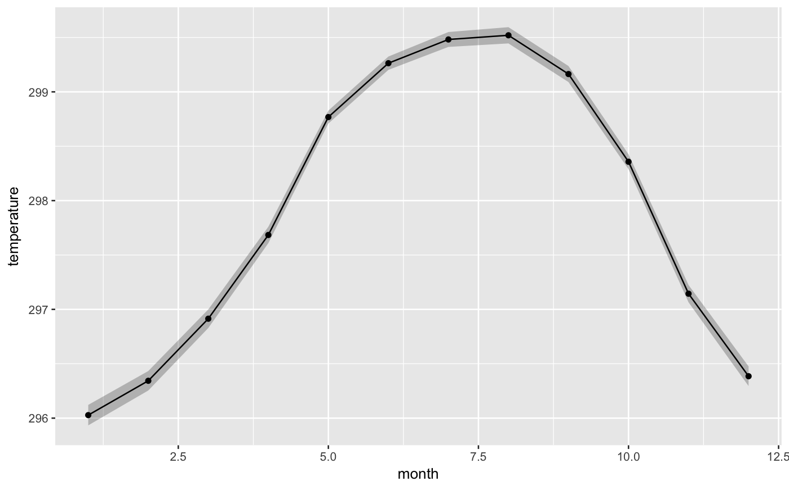
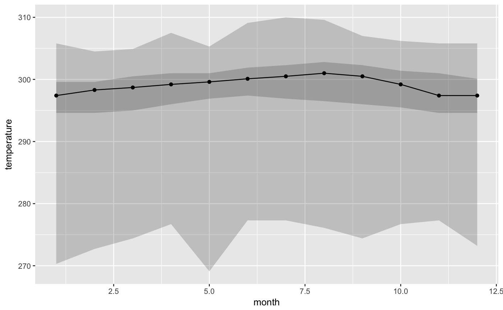
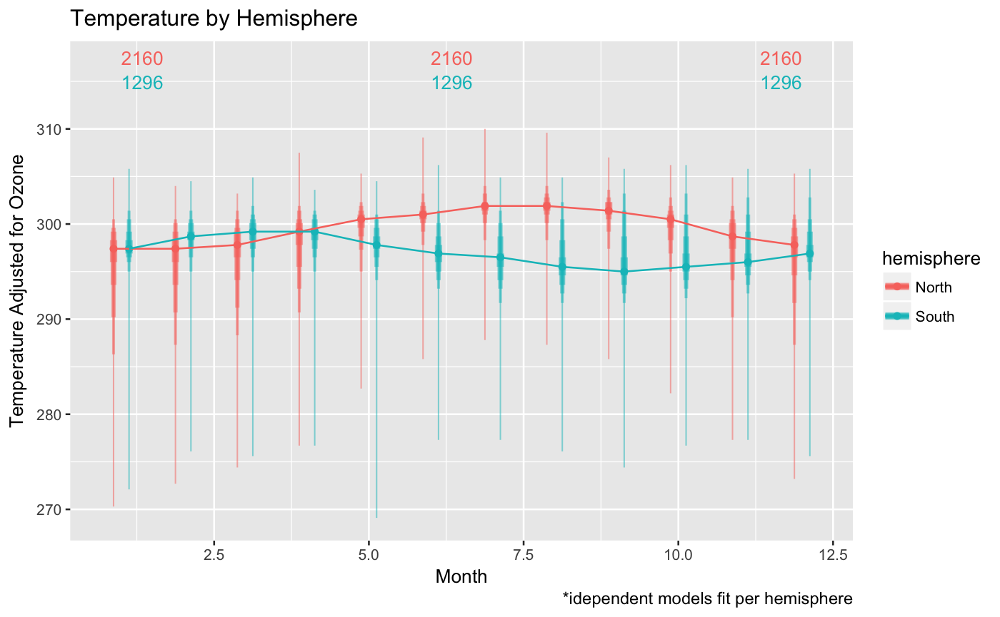

Wrapper for fitting model and adjusting to predicted values and passing newly fitted model to ggplot geom_stat_ribbon
PlotLong(data, mapping = NULL, model = lm, model.per = NULL, model.formula = NULL, facet.fun = NULL, plot.style = "ribbons", ...)
| data | data to use for model fitting and plotting |
|---|---|
| mapping | ggplot aesthetic mapping to use for plotting |
| model | model function to use for fitting; defaults to lm |
| model.per | grouping variables by which to isolate individual models |
| model.formula | model formula to use for model fitting |
| facet.fun | function to use for ggplot faceting in ggplot2::facet_grid |
| plot.style | one of 'errorbars' or 'ribbons' |
| ... | Additional arguments allow for an assortion of additional functionality.
|
a ggplot object
# load data nasa.data <- as.data.frame(dplyr::nasa) # default representation PlotLong(nasa.data, x = month, y = temperature)# a more appropriate representation for large n PlotLong(nasa.data, x = month, y = temperature, fun.data = 'quartiles')# include linear adjustment accounting for amount of ozone PlotLong(nasa.data, x = month, y = temperature, formula = temperature ~ ozone, fun.data = 'deciles', show.counts = T)#> Warning: Ignoring unknown parameters: direction#> Error in if (!point_inside && d > 0 && euclid(int, point_pos) > min.segment.length) { s <- segmentsGrob(x0 = int[1], y0 = int[2], x1 = point_pos[1], y1 = point_pos[2], default.units = "native", gp = x$segment.gp, name = "segment", arrow = x$arrow) setChildren(x, gList(s, r, t))} else { setChildren(x, gList(r, t))}: missing value where TRUE/FALSE needed# adjusting by independent models for the northern and southern hemispheres library(dplyr) # needed for %>% PlotLong(nasa.data %>% mutate(hemi=ifelse(lat>0, "North", "South")), x = month, y = temperature, formula = temperature ~ ozone, model.per = ~ hemi, facet.fun = ~ hemi, fun.data = 'deciles', xlab = "Month", ylab = "Temperature Adjusted for Ozone", labs.title = "Temperature by Hemisphere", labs.caption = "*idependent models fit per hemisphere") # including a table of value counts and subsetting value data to specific # months library(dplyr) # needed for %>% PlotLong(nasa.data %>% mutate(hemisphere=ifelse(lat > 0, "North", "South")), x = month, y = temperature, group = hemisphere, color = hemisphere, fill = hemisphere, formula = temperature ~ ozone, model.per = ~ hemisphere, fun.data = 'deciles', plot.style = 'errorbars', show.counts = 'table', label.data = . %>% filter(month %in% c(1, 6, 12)), label.hjust = 'inward', xlab = "Month", ylab = "Temperature Adjusted for Ozone", labs.title = "Temperature by Hemisphere", labs.caption = "*idependent models fit per hemisphere")